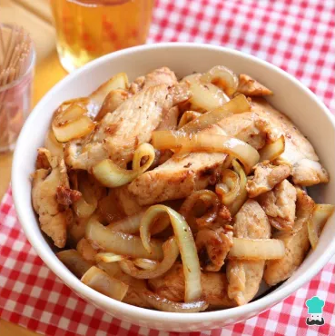

Ingredientes:
- 500g de peito de frango em tiras ou cubos
- 2 cebolas grandes cortadas em rodelas
- 3 dentes de alho picados
- 1 colher de sopa de molho shoyu
- Suco de 1 limão
- 2 colheres de sopa de azeite
- Sal e pimenta-do-reino a gosto
- Salsinha picada (opcional)

Modo de Preparo:
- Tempere o frango com sal, pimenta, alho e suco de limão. Deixe marinar por cerca de 20 minutos.
- Em uma frigideira grande, aqueça o azeite e frite o frango até dourar. Retire e reserve.
- Na mesma frigideira, adicione as cebolas e refogue até que fiquem levemente douradas e macias.
- Acrescente o frango de volta à frigideira e misture com as cebolas, adicionando o molho shoyu.
- Cozinhe por mais alguns minutos, até o frango absorver o sabor da cebola e do shoyu.
- Finalize com salsinha picada, se desejar.